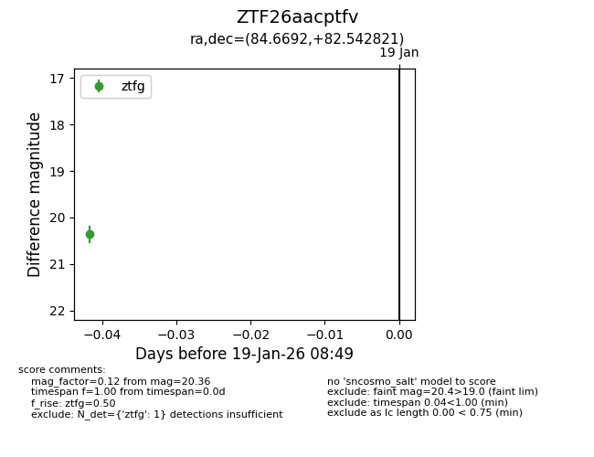
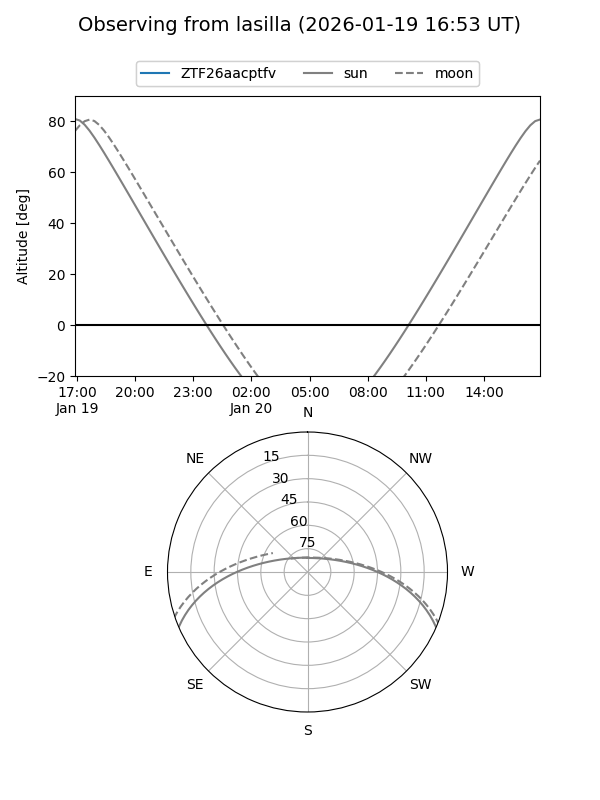
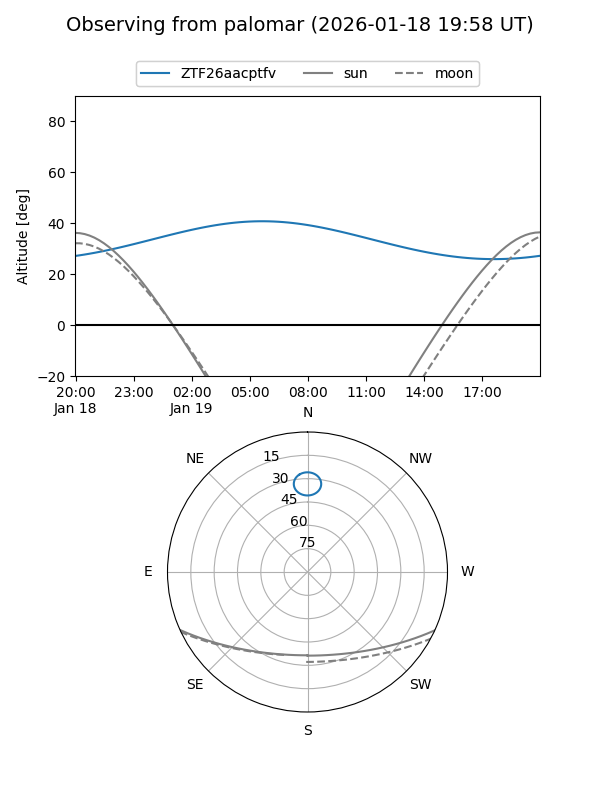

ZTF26aacptfv
Target ZTF26aacptfv at 2026-01-19 08:50
Aliases and brokers:
FINK: link
Lasair: link
ALeRCE: link
alt names
ZTF26aacptfv (ztf,fink_ztf)
Coordinates:
equatorial (ra, dec) = 84.6692,+82.54282
equatorial (HMS+DMS) = 05:38:40.60,+82:32:34.15
galactic (l, b) = (130.7248,+24.58664)
Flags:
Photometry:
last ztfg=20.36
1 ztfg detections
Lightcurve

Visibility


Additional plots